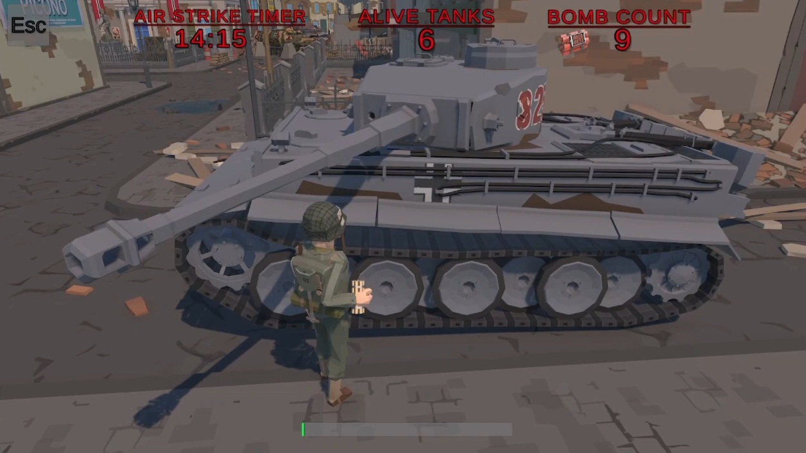
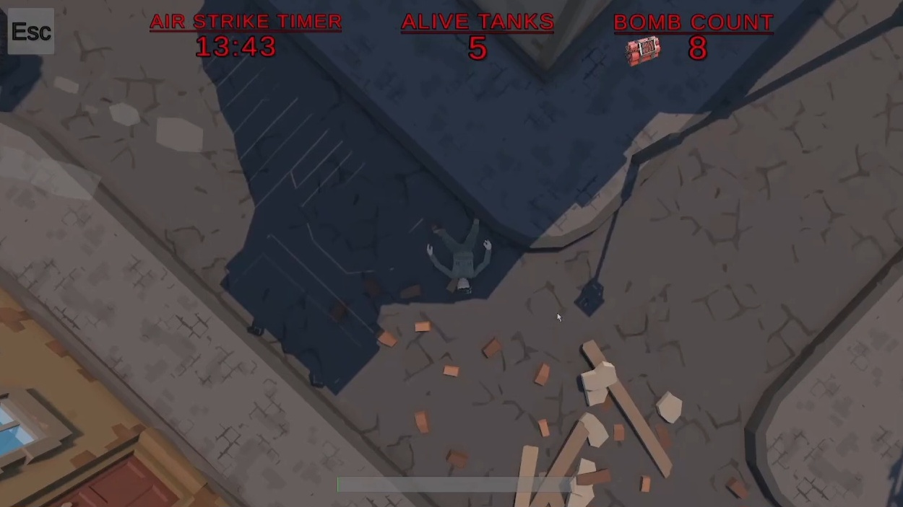
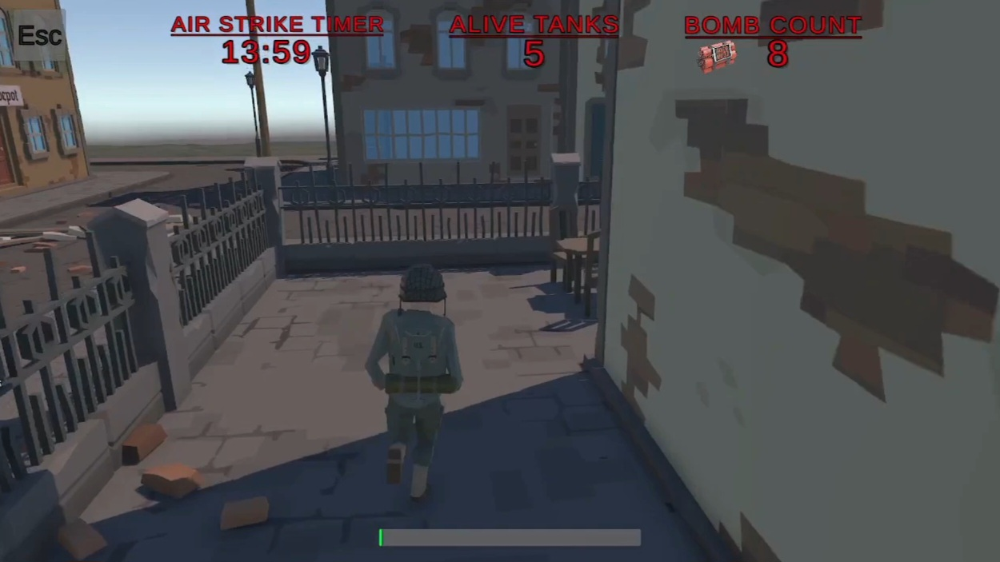

Last Soldier
Last Soldier is a Game Jam entry featuring a third-person survival game where you play as the last soldier fighting against enemy tanks. Built in Unity with responsive controls, strategic gameplay, and advanced mathematics including trigonometry and dot product calculations for precise aiming and tactical movement.




🧠 Core Features
- Place bombs on tanks or walls to destroy them strategically
- Custom tank patrol system using point-to-point movement (no NavMesh)
- Cinematic death cutscene with dramatic camera angles
- Tank turrets dynamically rotate and fire at player position
- Tactical cover system—hide behind walls and fences to avoid tank attacks
- Audio alert system that triggers when tanks aim at the player
🧩 Technologies Used
📜 About the Game
This game was developed as part of a Game Jam, challenging me to create an engaging third-person survival experience within a limited timeframe. The player assumes the role of the last soldier, navigating a battlefield filled with six hostile tanks. Before time runs out, the player must destroy all six tanks using strategically placed bombs. Failure to eliminate all tanks results in an airstrike that obliterates the entire area. Survival depends on tactical thinking, precise timing, and complete destruction of all enemy forces.
💡 Challenges
- Implementing accurate aim and shoot calculations based on player distance using trigonometry
- Creating smooth bomb placement animations synchronized with gameplay logic
- Designing intelligent tank patrol paths without relying on Unity's NavMesh system
- Balancing game difficulty and mechanics within strict Game Jam time constraints
- Optimizing turret rotation and tracking systems for real-time performance
🎮 Availability
Available as a playable game on Itch.io and an open-source project on GitHub for developers and Unity enthusiasts.